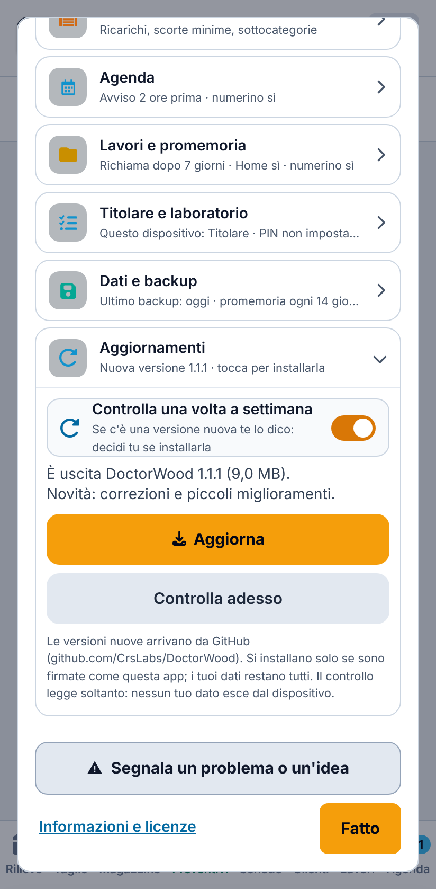
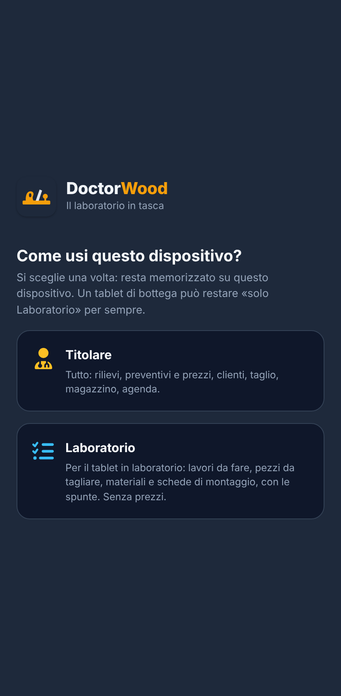
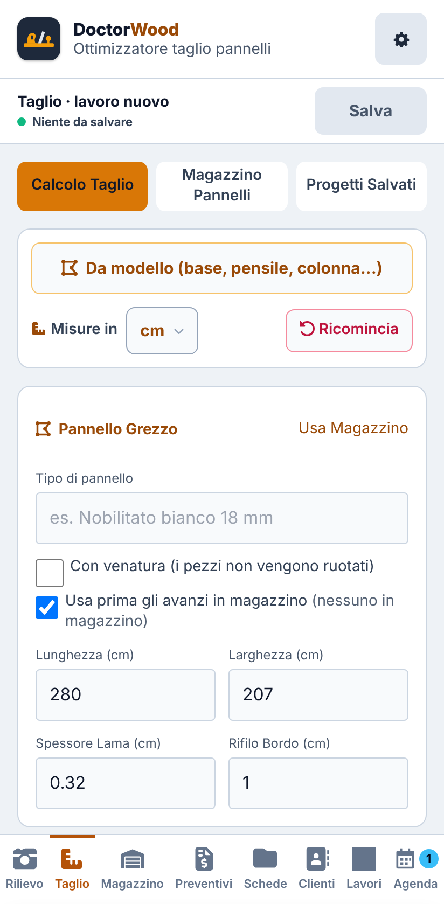
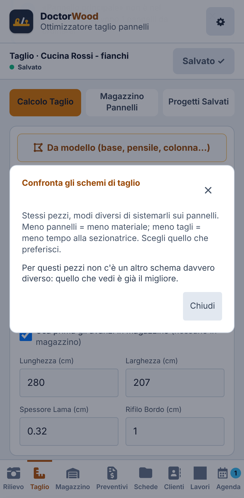
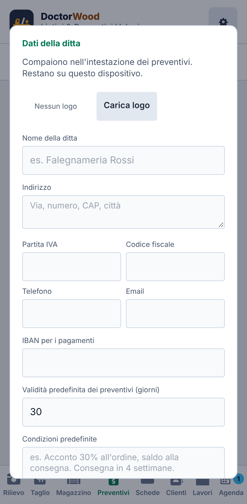
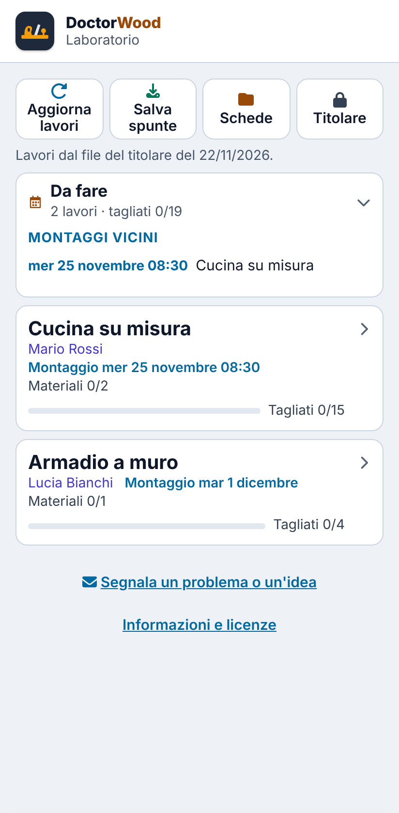

Tutte le funzioni, spiegate con le schermate dell'app
Versione dell'app {{VERSIONE}} · guida aggiornata il {{DATA}}
Indice
Parte 1 · Iniziare
1 · Cos'è DoctorWood00
2 · Primo avvio: Titolare o Laboratorio00
3 · La Home00
Parte 2 · Clienti e lavori
4 · Clienti00
5 · Lavori e percorsi guidati00
6 · Rilievo con le foto00
7 · Agenda00
Parte 3 · Progettare e vendere
8 · Taglio dei pannelli00
9 · Preventivi, firma e fattura00
10 · Magazzino00
Parte 4 · In laboratorio
11 · Schede di montaggio00
12 · Il tablet del Laboratorio00
13 · Collegare telefono e tablet00
Parte 5 · I tuoi dati
14 · Backup dei dati00
15 · Sicurezza e privacy00
Parte 6 · Impostazioni e aiuto
16 · Le Impostazioni00
17 · Se qualcosa non va00
18 · Contatti, segnalazioni e sostegno00
19 · Novità, versione per versione00
Questa guida descrive tutte le funzioni, una sezione dell'app per capitolo. Leggila dall'inizio la prima volta, poi usala come consultazione.
Il Tutorial (un altro PDF) spiega invece una cosa per volta, in pochi passi: «come si fa un preventivo», «come si collega il tablet»…
§§p1§§
Parte 1
Iniziare
Cos'è DoctorWood e a chi è utile
Il primo avvio: telefono del titolare o tablet di bottega
Muoversi nella Home
§§c1§§
1Cos'è DoctorWood
DoctorWood è il gestionale per la falegnameria che funziona senza internet: rilievi con le foto, taglio dei pannelli, preventivi, clienti e lavori, agenda, magazzino e schede di montaggio. C'è l'app per Android (telefono e tablet) e la stessa app come pagina da aprire sul computer.
Tutto resta sul tuo dispositivo. L'app non invia niente da sola, non ha pubblicità né account.
Due modi di usarla:Titolare (il tuo telefono: tutto, compresi prezzi e clienti) e Laboratorio (il tablet di bottega: solo i lavori da produrre, senza prezzi).
Dati protetti: blocco con l'impronta, backup sempre cifrati, nessuna traccia in giro per il telefono.
Le sezioni dell'app
Sezione
Cosa trovi
Capitolo
Home
Oggi, cose da fare, lavori in corso, dati e backup
3
Clienti
L'anagrafica dei clienti
4
Lavori
Le commesse, ognuna con il suo prossimo passo
5
Rilievo
Misure e quote sopra le foto del cantiere
6
Agenda
Appuntamenti, montaggi, giorni di lavorazione
7
Taglio
Come tagliare i pannelli con meno scarto
8
Preventivi
Preventivi in PDF, firma del cliente, file per la fattura
9
Magazzino
Listino, scorte, avanzi dei pannelli
10
Schede
Schede tecniche e istruzioni di montaggio
11
Impostazioni (ingranaggio in alto)
Aspetto, valori predefiniti, laboratorio, dati
16
Installare e aggiornare l'app
DoctorWood per Android si scarica gratis da GitHub, dalla pagina delle versioni pubblicate: github.com/CrsLabs/DoctorWood/releases. Serve Android 10 o più recente.
Dal telefono o dal tablet apri la pagina e scarica il file DoctorWood-….apk dell'ultima versione.
Apri il file scaricato. La prima volta Android chiede di permettere l'installazione dal browser (o dall'app File): accendi l'interruttore e torna indietro.
Tocca Installa. Fatto.

Impostazioni → Aggiornamenti
Gli aggiornamenti arrivano da soli. Una volta a settimana DoctorWood controlla se c'è una versione nuova. Se c'è, ti chiede «È uscita DoctorWood…» con le novità e i tasti Aggiorna e Più tardi. Con Aggiorna l'app scarica la versione nuova e Android chiede la conferma: i tuoi dati restano tutti. Succede anche sul tablet del laboratorio.
In Impostazioni → Aggiornamenti puoi spegnere il controllo settimanale o fare subito Controlla adesso.
L'aggiornamento si installa solo se è firmato come l'app che hai e se è proprio il file pubblicato (DoctorWood controlla la sua «impronta»). Il controllo legge soltanto da GitHub: nessun tuo dato esce dal dispositivo.
§§c2§§
2Primo avvio: Titolare o Laboratorio

Come usi questo dispositivo?La domanda «solo laboratorio»
La prima volta DoctorWood chiede come usi questo dispositivo:
Titolare: sul tuo telefono. Hai tutte le sezioni: rilievi, preventivi e prezzi, clienti, taglio, magazzino, agenda. L'app propone subito una password di emergenza e l'impronta: conviene farlo (puoi anche più tardi, dalle Impostazioni).
Laboratorio: sul tablet di bottega. Schermo intero, scritte grandi, solo i lavori da fare, i pezzi da tagliare, i materiali e le schede di montaggio. Niente prezzi.
Se scegli Laboratorio, l'app chiede ancora: «Questo tablet servirà solo per il laboratorio?»
Sì, solo laboratorio: il tablet resta per sempre in Laboratorio. Non serve nessun PIN e chi lo usa non può vedere prezzi, clienti o incassi, perché su quel tablet non ci sono. È la scelta giusta per il tablet di bottega.
No, anche Titolare: imposti un PIN; con il PIN si può tornare Titolare.
Su un dispositivo che hai usato da Titolare, passando in Laboratorio i tuoi dati vengono cifrati (con l'impronta e la password di emergenza): per tornare Titolare serve l'impronta oppure la password. Non esistono scorciatoie. Chi non ha l'impronta sul telefono può usare il PIN o la sequenza di sblocco.
All'apertura compare il logo per un istante; se il blocco è acceso, poi si chiede l'impronta.
§§c3§§
3La Home
La Home del titolare
In alto: il nome dell'app, l'indicatore dei dati (verde quando è tutto salvato: toccalo per i dettagli) e l'ingranaggio delle Impostazioni.
Oggi: gli appuntamenti del giorno; «Apri l'agenda» porta al calendario.
Da fare: cosa è urgente (preventivi da inviare, lavori fermi, promemoria). Se non c'è niente, lo dice.
Lavori in corso: ogni lavoro con il suo prossimo passo. «Tutti i lavori» apre la sezione Lavori.
Dati e backup: spazio usato, ultimo backup, «Esporta backup», «Importa backup», «Dati della ditta», «Verifica dati».
Tasti in basso:+ Lavoro, + Preventivo, + Rilievo, + Appuntamento per creare al volo. Sotto c'è la barra delle sezioni: Rilievo, Taglio, Magazzino, Preventivi, Schede, Clienti, Lavori, Agenda.
Ogni riquadro si chiude e si riapre toccando la freccia. Premendo Indietro da qualsiasi sezione si torna alla Home.
Quando è passato troppo tempo dall'ultimo backup (di serie 14 giorni) in Home compare un promemoria.
§§p2§§
Parte 2
Clienti e lavori
L'anagrafica dei clienti
I lavori: tutto di una commessa in un posto, con il prossimo passo
Il rilievo in cantiere con le foto
L'agenda di appuntamenti, montaggi e lavorazioni
§§c4§§
4Clienti
Clienti
La sezione Clienti è l'anagrafica: nome, telefono, email, indirizzo, partita IVA o codice fiscale e note.
Tocca Nuovo Cliente.
Scrivi almeno il nome; il resto è facoltativo.
Salva. Il cliente si può scegliere da lavori, preventivi, rilievi e appuntamenti.
La ricerca trova per nome, telefono, email o indirizzo. Toccando un cliente vedi i suoi dati e i suoi lavori; da lì lo chiami o gli scrivi con un tocco.
Un cliente si può creare anche al volo, mentre fai un lavoro o un preventivo, con «+ Nuovo cliente…».
§§c5§§
5Lavori e percorsi guidati
Un lavoro raccoglie tutto di una commessa: rilievo, preventivo, taglio, materiali, appuntamenti, montaggio, pagamento e note.
La sezione LavoriNuovo lavoro, passo per passo
La sezione Lavori ha i filtri In corso, Chiusi e Tutti e una ricerca per lavoro o cliente. Ogni lavoro mostra il punto in cui è (per esempio «Preventivo da inviare») e una barra di avanzamento.
Il percorso guidato
+ Lavoro (o «Nuovo lavoro») apre un percorso guidato in pochi passi: prima il cliente (dall'elenco o nuovo), poi il nome del lavoro (es. «Cucina su misura»), poi cosa fare per primo. Avanti e Indietro spostano tra i passi; se esci prima della fine l'app chiede conferma, perché quello che hai scritto andrebbe perso.
Allo stesso modo funzionano il preventivo guidato e il rilievo nuovo.
La scheda del lavoro
La scheda di un lavoro
In cima c'è il Prossimo passo: l'app ti dice cosa fare adesso, con il tasto per farlo (per esempio «Apri il preventivo»).
Sotto, il riquadro Laboratorio:
Manda al laboratorio: il lavoro va sul tablet di bottega con i tagli e i materiali già preparati, anche se il preventivo non è ancora accettato. Di solito ci va da solo quando il preventivo è «Accettato».
Programma la lavorazione in calendario: scegli il primo giorno e quanti giorni servono (da 1 a 60); con «Salta sabato e domenica» i giorni cadono solo nei feriali. Compaiono in Agenda come «Lavorazione».
Quando il tablet manda le spunte, qui vedi Dal laboratorio: quanti pezzi sono tagliati e quanti materiali sono stati presi.
Poi le parti del lavoro, che si aprono toccandole: Rilievo, Preventivo, Taglio e Materiali, Appuntamenti e montaggio, Pagamento, Note.
§§c6§§
6Rilievo con le foto
Rilievo
Per prendere le misure in cantiere sopra una foto.
Scegli il rilievo e il cliente collegato (o «Nuovo»).
Tocca Scatta per la fotocamera di DoctorWood, oppure Aggiungi per prendere foto dalla galleria.
Tocca sulla foto per mettere quote e note: puoi spostarle, ingrandirle (A+ / A−) e ruotarle.
Con Zoom ingrandisci la foto; con due dita come sempre.
Salva in alto. Per i documenti: Scarica JPG o Esporta PDF.
Se esci senza salvare, l'app chiede se salvare, uscire senza salvare o restare.
La fotocamera di DoctorWood
Più foto di fila, flash, griglia, livella, zoom con i pulsanti o con due dita, messa a fuoco toccando lo schermo.
Pulsante 0,5× (grandangolo) se il telefono lo permette, scelta del formato (4:3, 16:9, 1:1) e HDR dove disponibile.
Le foto vengono ridotte a 2560 px e raddrizzate. Se preferisci, «Usa la fotocamera del telefono».
§§c7§§
7Agenda
Agenda, vista Mese
Vista Settimana o Mese, frecce per spostarti e Oggi per tornare a oggi. Dal mese, toccando un giorno vedi i suoi appuntamenti.
Nuovo appuntamento (o il «+» del giorno): tipo (rilievo, montaggio, consegna, lavorazione…), titolo, cliente, lavoro, preventivo, ora e durata.
Gli appuntamenti sono collegati ai lavori e compaiono in Home, in «Oggi» e tra le cose «Da fare».
I giorni di lavorazione si mettono in calendario tutti insieme dalla scheda del lavoro (capitolo 5).
Puoi ricevere un avviso prima dell'appuntamento (Impostazioni → Agenda).
§§p3§§
Parte 3
Progettare e vendere
Il taglio dei pannelli con meno scarto, e il confronto fra schemi
Preventivi in PDF, firma del cliente, file per il commercialista
Il magazzino: listino, scorte e avanzi
§§c8§§
8Taglio dei pannelli

Taglio
Calcola come tagliare i pezzi dai pannelli sprecando il meno possibile. In alto ci sono tre schede: Calcolo Taglio, Magazzino Pannelli e Progetti Salvati.
Per partire più in fretta tocca Da modello (base, pensile, colonna…): scrivi le misure del mobile e i pezzi si compilano da soli. Oppure scrivili tu.
Scegli l'unità (cm o mm). «Ricomincia» svuota tutto, con conferma.
In Pannello Grezzo scegli il tipo di pannello (o Usa Magazzino), le misure, lo spessore della lama e il rifilo dei bordi.
Segna Con venatura se i pezzi non si possono ruotare, e Usa prima gli avanzi in magazzino per recuperare gli scarti.
Scrivi i pezzi (lunghezza, larghezza, quantità, bordi) e tocca Calcola: vedi i pannelli disegnati con i tagli e la percentuale di scarto.
Salva in alto per riprenderlo dopo. Per i documenti: Distinta PDF, Etichette PDF, la tabella per la sezionatrice o il DXF.

Confronta gli schemi
Confrontare gli schemi
Dopo il calcolo, Confronta con altri schemi mostra fino a quattro modi diversi di sistemare gli stessi pezzi. Per ognuno vedi i pannelli necessari, lo scarto e il numero di tagli: meno pannelli vuol dire meno materiale, meno tagli vuol dire meno tempo alla sezionatrice. Con Usa questo schema scegli quello che preferisci; disegno, distinta ed etichette seguono la tua scelta.
Se per quei pezzi non esiste un altro schema davvero diverso, l'app lo dice: quello che vedi è già il migliore.
Etichette con codice QR
Le etichette dei pezzi (PDF) hanno un codice QR, oltre al codice a barre. Serve al tablet del Laboratorio: basta inquadrare l'etichetta per ritrovare il pezzo e segnarlo tagliato (capitolo 12). Nel QR non ci sono nomi né dati, solo un codice breve.
§§c9§§
9Preventivi, firma e fattura
Preventivo rapido
Il preventivo è diviso in gruppi, ognuno con due righe di spiegazione:
Aggiungi le voci: Dal taglio (prende i pannelli e i pezzi di un taglio calcolato), Dal magazzino (un articolo con il suo prezzo) o una voce scritta a mano.
Scegli cliente e lavoro, imposta IVA, sconto, acconto, validità e condizioni. I dati della tua ditta compaiono in intestazione.
Tieni questo preventivo: Salva (in alto) lo mette nell'elenco; Duplica ne crea uno uguale da cambiare; Nuovo guidato ne inizia un altro a passi.
Crea il PDF e mandalo con Condividi. Lo stato segue il lavoro: Bozza, Inviato, Accettato, Rifiutato.
I preventivi hanno una numerazione progressiva, che puoi impostare. «Fissa appuntamento» crea subito un appuntamento per quel lavoro.
Foto, firma e fattura
Il cliente firma con il dito
Foto del sopralluogo: quando crei il PDF, se il cliente ha foto di rilievo (anche con le quote disegnate sopra) l'app chiede se allegarle. Finiscono in fondo, due per pagina (al massimo 12).
Firma cliente: apre uno spazio bianco dove il cliente firma con il dito. Cancella la rifà, Conferma firma la salva. La firma compare nel PDF con data e ora e l'app propone di segnare il preventivo come Accettato. Se poi cambi voci, prezzi, IVA, sconto o acconto, la firma non vale più e nel PDF non compare.
Per la fattura: crea un file (CSV, si apre anche con Excel) con le righe del preventivo, l'IVA e i dati del cliente, P.IVA o codice fiscale compresi, da dare al commercialista. Non è una fattura elettronica: la emette lui.

Dati della ditta
I dati della ditta
Prima dei preventivi compila Dati della ditta (Home → Dati e backup): nome, indirizzo, partita IVA, codice fiscale, telefono, email, IBAN (facoltativo), logo, validità predefinita dei preventivi in giorni e condizioni predefinite (acconto, saldo, tempi di consegna).
Compaiono nell'intestazione dei preventivi e restano solo su questo dispositivo. L'app controlla che partita IVA, codice fiscale, email e IBAN siano scritti bene.
§§c10§§
10Magazzino
Magazzino
Il listino dei tuoi materiali e le scorte.
Nuovo articolo: nome, codice, fornitore, categoria e sottocategoria, unità, prezzo e quantità.
Cerca per nome, codice o fornitore; filtra per categoria.
I tasti − / + sulla riga aggiornano le quantità al volo.
Un articolo sotto la scorta minima finisce in Da riordinare.
In alto vedi quanti articoli hai e il valore delle scorte. Prezzi netti / Con ricarico cambia come sono mostrati i prezzi.
Ricarichi e scorte: il ricarico per categoria e la scorta minima.
Gli avanzi dei pannelli tagliati si ritrovano in Taglio → Magazzino Pannelli, pronti da riusare.
§§p4§§
Parte 4
In laboratorio
Le schede di montaggio, sempre a portata di mano
Il tablet di bottega: lavori, pezzi, materiali, spunte
Collegare il telefono del titolare e il tablet, nella stessa Wi‑Fi
§§c11§§
11Schede di montaggio
Schede
L'archivio delle schede tecniche dei prodotti (cerniere, guide, ferramenta…) con foto e istruzioni di montaggio.
Nuova scheda: titolo, produttore, categoria e foto (anche scattate al momento) o PDF.
Cerca per nome o produttore, filtra per categoria e produttore, segna le Preferite con la stella.
Apri una scheda per leggerla o per aprire il suo PDF con l'app del telefono.
Anche il tablet in Laboratorio apre le schede, con il tasto Schede.
§§c12§§
12Il tablet del Laboratorio

Laboratorio (tablet)
Sul tablet di bottega DoctorWood mostra solo i lavori da produrre, a schermo intero e con scritte grandi.
Da fare: quanti lavori ci sono, quanti pezzi sono già tagliati e i montaggi vicini dei prossimi 7 giorni.
Ogni lavoro mostra cliente, data del montaggio e avanzamento. Toccandolo si aprono i pezzi da tagliare e i materiali da prendere: si spuntano con un tocco. Quando è tutto pronto si segna Pronto per il montaggio.
Aggiorna lavori: riceve subito i lavori dal telefono del titolare.
Salva spunte: manda al titolare cosa è già stato fatto.
Leggi etichetta: inquadra il QR di un'etichetta del taglio: l'app mostra il pezzo e, se confermi, lo segna come tagliato.
Schede: le schede di montaggio.
Titolare: per tornare alla modalità titolare (impronta, PIN o password di emergenza). Sul tablet «solo laboratorio» questo tasto non c'è.
Cosa arriva sul tablet
Per ogni lavoro mandato al laboratorio arrivano solo: il titolo, il nome del cliente e l'indirizzo del montaggio, la data del montaggio, i pezzi da tagliare con il materiale e i bordi, i materiali con le quantità. Non arrivano prezzi, costi, IVA, incassi, telefoni, email, partite IVA né note dei clienti. L'app lo controlla a ogni versione con una prova automatica.
Il tablet resta bloccato su DoctorWood («Fissa app» di Android): chi lo prende non esce dall'app.
§§c13§§
13Collegare telefono e tablet
Telefono e tablet si parlano nella stessa Wi‑Fi, senza cloud, con un collegamento cifrato e solo tra dispositivi abbinati.
Sul telefono: Impostazioni → «Titolare e laboratorio» → «Sincronizzazione con il laboratorio» → Diretta (Wi‑Fi). Compaiono il codice e il QR (valgono 10 minuti).
Sul tablet: Laboratorio → «Collega la sincronizzazione» → Diretta (Wi‑Fi) → inquadra il QR (si collega da solo) o scrivi il codice.
Da qui è automatica: dopo ogni modifica, quando riapri l'app, quando torna la Wi‑Fi.
Altro tablet: Impostazioni → «Codice di abbinamento» riapre l'abbinamento per 10 minuti. Con tre dispositivi basta abbinarne uno: gli altri si presentano da soli.
Tablet sempre raggiungibile: resta in ascolto anche a schermo spento nell'orario di lavoro (per esempio lun–sab 7–19; si cambia da Laboratorio → Sincronizzazione → «Orario e altro…»). Conviene tenerlo in carica.
Tablet perso o rubato: «Dispositivi abbinati» → Dimentica; oppure Cambia codice (impronta o PIN): tutti vengono dimenticati e si ricollegano con il codice nuovo.
I lavori sono firmati dal titolare: il tablet scarta qualunque file non firmato da lui.
In alternativa si può sincronizzare una cartella con un'app esterna (Syncthing, Autosync o FolderSync con Drive): DoctorWood ci scrive solo file cifrati.
§§p5§§
Parte 5
I tuoi dati
Il backup cifrato, e come riprenderlo
Come DoctorWood protegge i tuoi dati
§§c14§§
14Backup dei dati
Fai spesso un backup: se cambi telefono o cancelli i dati, è l'unico modo di riavere tutto.
Esporta backup (Home → Dati e backup): scegli una password (almeno 12 caratteri, non ripetitiva) e dove salvare il file. Il backup è sempre cifrato.
Importa backup: scegli il file e scrivi la password. Prima di sostituire i dati l'app controlla il file; se non si può importare, dice il motivo.
Verifica dati controlla che l'archivio sia in ordine.
L'indicatore in alto ti dice se c'è qualcosa da fare; un promemoria avvisa se è passato troppo tempo dall'ultimo backup (di serie ogni 14 giorni, si cambia in Impostazioni → Dati e backup).
Non perdere la password del backup: non c'è modo di recuperarla.
Conserva il file del backup fuori dal telefono (sul computer, su una chiavetta o su Drive): essendo cifrato, senza la password nessuno lo può leggere.
§§c15§§
15Sicurezza e privacy
Funziona senza internet. La pagina dell'app non ha accesso alla rete. Parlano in rete solo il modulo di sincronizzazione (PairWood), in Wi‑Fi con i tuoi dispositivi abbinati, e il controllo degli aggiornamenti, che legge da GitHub una volta a settimana (si può spegnere).
Laboratorio cifrato. Su un dispositivo usato da Titolare, passando in Laboratorio i dati del titolare sono cifrati con AES‑256 e una chiave custodita da Android legata alla tua impronta. Se cambiano le impronte registrate, serve la password di emergenza. Prima di attivare la cassaforte l'app ti chiede di controllare che sul telefono ci siano solo le tue impronte.
Tablet «solo laboratorio». Sul tablet di bottega i dati del titolare non ci sono proprio: arrivano solo i lavori da fare (capitolo 12).
Blocco del titolare. All'apertura e al ritorno nell'app si chiede impronta o PIN. Non si chiede quando scegli un file, scatti una foto, salvi o condividi dall'app stessa (salvo assenze lunghe). Nelle app recenti non si vede il contenuto.
Backup solo cifrati, con password minime controllate.
Nessuna traccia. I dati stanno nelle cartelle private dell'app (spariscono con la disinstallazione) e non vanno nel backup di Google. Cancella tutto da questo dispositivo toglie dati, chiavi, permessi e i file di sincronizzazione.
§§p6§§
Parte 6
Impostazioni e aiuto
Tutte le impostazioni, voce per voce
Cosa fare quando qualcosa non va
Scriverci e sostenere DoctorWood
Le novità di ogni versione
§§c16§§
16Le Impostazioni
Impostazioni
Si aprono dall'ingranaggio. Ogni voce si apre toccandola; toccando fuori o Fatto si chiudono.
Aspetto: tema (automatico, chiaro, scuro), dimensione del testo (Normale, Grande, Molto grande), animazioni, fluidità dello schermo. Il tema cambia subito, senza sfarfallii.
Lavori e promemoria: richiami dopo alcuni giorni, riquadri della Home.
Titolare e laboratorio: modalità, PIN, sincronizzazione, dispositivi abbinati, codice di abbinamento, «Cambia codice», «Fissa app». Sul tablet «solo laboratorio» le voci per diventare Titolare non ci sono.
Dati e backup: backup, promemoria, importazione e «Cancella tutto da questo dispositivo».
Aggiornamenti (app Android): controllo settimanale, «Controlla adesso», «Aggiorna» (capitolo 1).
In fondo: Sostieni DoctorWood (nell'app Android), Segnala un problema o un'idea e Informazioni e licenze (capitolo 18).
§§c17§§
17Se qualcosa non va
Cosa succede
Cosa fare
Il tablet non riceve i lavori
Controlla che telefono e tablet siano nella stessa Wi‑Fi (non quella «ospiti») e che il lavoro sia stato mandato al laboratorio. Sul tablet tocca «Aggiorna lavori».
Il codice di abbinamento non funziona
Vale 10 minuti: riaprilo dal telefono (Codice di abbinamento) e inquadra il QR o riscrivilo.
Chiede la password di emergenza
Succede se sono cambiate le impronte registrate sul telefono. Scrivila: l'impronta si ricollega.
Il tablet «solo laboratorio» deve diventare Titolare
Non si può, per scelta: così nessuno in bottega vede i tuoi dati. Se serve davvero, cancella i dati dell'app dalle impostazioni di Android e rifai il primo avvio.
Il backup non si importa
Controlla la password (maiuscole e minuscole) e che il file sia un backup di DoctorWood. Il messaggio dice il motivo; se non basta, segnalalo.
Devo stampare un documento
DoctorWood non stampa: crea il PDF (o gli altri formati) e stampalo dall'app che lo apre, oppure mandalo a chi lo deve stampare.
Non trova gli aggiornamenti
Serve internet. In Impostazioni → Aggiornamenti tocca «Controlla adesso»: il messaggio dice com'è andata. Se Android chiede il permesso di installare app, accendilo e torna indietro.
Un'altra cosa
Impostazioni → Segnala un problema o un'idea, con le informazioni tecniche.
§§c18§§
18Contatti, segnalazioni e sostegno
In fondo alle Impostazioni
Segnala un problema o un'idea
In fondo alle Impostazioni tocca Segnala un problema o un'idea.
Scegli Un problema o Un'idea e descrivi in poche parole. Lascia le informazioni tecniche: aiutano a capire.
Tocca Invia con la posta: si apre la tua app di posta con la mail pronta per crslabs.info@gmail.com. Parte solo quando la spedisci tu.
Sostieni DoctorWood
DoctorWood è gratis, senza pubblicità e senza raccogliere dati. Se ti è utile, nell'app Android il tasto Sostieni DoctorWood apre nel browser la pagina ko-fi.com/crslabs, dove puoi offrire un caffè allo sviluppatore. L'app non invia niente.
Informazioni e licenze
Versione dell'app, sviluppatore (CrsLabs), contatti e licenze dei componenti usati. DoctorWood è software libero (licenza GNU GPL 3.0): il codice è su github.com/CrsLabs/DoctorWood.
§§c19§§
19Novità, versione per versione
Qui si aggiunge una riga a ogni nuova versione.
Versione
Novità
1.1.0
Aggiornamenti automatici da GitHub (anche sul tablet); DoctorWood diventa software libero (GPL 3.0); tablet «solo laboratorio» al primo avvio (niente PIN, niente dati del titolare); controllo automatico di cosa arriva sul tablet; sincronizzazione PairWood 0.18.7; un solo numero di versione; Informazioni a nome CrsLabs; guida e tutorial riorganizzati.
1.0.43–45
Fondo delle Impostazioni come nelle altre app CrsLabs (Sostieni e Segnala); tema che cambia in un colpo solo, senza sfarfallio; barra di stato leggibile anche con il tema chiaro.
1.0.42
Nessun avviso resta più di 10 secondi; segnalazioni a crslabs.info@gmail.com; Sostieni DoctorWood.
1.0.41
Taglio: parte alta compatta (schede su una riga, «Ricomincia» piccolo accanto all'unità).
1.0.40
Tolta la stampa ovunque (restano PDF e gli altri formati); Taglio senza «Esempio».
1.0.38
Barra del salvataggio uguale in tutte le sezioni; uscita con tre scelte (salva, non salvare, resta).
1.0.36
Manda al laboratorio; lavorazione in calendario; Preventivi divisi in gruppi con spiegazioni.
1.0.32–35
Sezione Lavori separata e percorsi guidati; agenda dal mese; dati della ditta completi e controllati; unità a scelta; salvataggi con scelta della cartella.
1.0.28
Confronta gli schemi di taglio; QR sulle etichette e Leggi etichetta nel Laboratorio; firma del cliente e foto del sopralluogo nel PDF del preventivo; Per la fattura e P.IVA/codice fiscale nei clienti.
1.0.26–27
Blocco con l'impronta solo quando l'app esce davvero dal primo piano; tablet in ascolto con meno batteria; annullare un trasferimento.
1.0.18–25
Abbinamento con QR; riquadro «Laboratorio» in Home; vibrazione su ogni tasto; apertura con il logo; messaggi chiari quando un backup non si importa.
La sincronizzazione usa PairWood, il motore scritto da zero insieme alle app CrsLabs. Codice tutto originale.